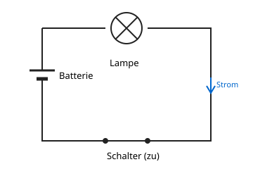

Der einfache Stromkreis
Mit einem KI-Tutor lernen
Ein KI-Tutor erklärt dir diese Seite und hilft dir bei den Übungen. Wähl deinen Assistenten:
Mit Claude öffnen Mit ChatGPT öffnen Mit Mistral Vibe öffnen
Du nutzt dein eigenes Konto beim Anbieter. Der Assistent ist kein Angebot von lernapps.net: lernapps liefert nur Inhalte und Übungen. Die Wahl gilt für alle Seiten, nur auf diesem Gerät.
Warum?
Aus der Grundschule kennst du Batterie, Lampe und Kabel. Die Lampe leuchtet nur, wenn du alles richtig verbunden hast. Woran liegt das?
Erklärung
Ein einfacher Stromkreis besteht aus einer Spannungsquelle (hier die Batterie), einem Verbraucher (hier die Lampe) und Leitungen, die alles zu einem Ring verbinden. Auch ein Schalter gehört oft dazu.
- Stromkreis
Ein Stromkreis ist ein geschlossener Weg aus Spannungsquelle, Leitungen und Verbraucher, in dem der Strom fließen kann.

Achte darauf, dass die Leitung an keiner Stelle unterbrochen ist. Der Pfeil zeigt die Stromrichtung von Plus nach Minus.
Quelle: eigene Zeichnung. Lizenz: CC-BY-4.0.Der Strom fließt nur, wenn der Weg geschlossen ist. Ist er an einer Stelle unterbrochen, ist der Stromkreis offen, und die Lampe bleibt dunkel. Der Strom wird dabei nicht in der Lampe aufgebraucht: Er fließt im Kreis, auch durch die Batterie. Die Lampe wandelt nur Energie in Licht und Wärme um.
Beispiel
Die Lampe leuchtet nicht
Eine Lampe ist mit einer Batterie verbunden, aber ein Kabel steckt nur an einer Seite.
- Der Weg vom Pluspol über die Lampe zum Minuspol ist unterbrochen.
- Der Stromkreis ist offen, also fließt kein Strom.
- Steckst du das Kabel fest an, ist der Kreis geschlossen, und die Lampe leuchtet.
Übung
Übung
Lösung
Ein Kabel ist nicht richtig verbunden, der Kreis ist offen. richtige Antwort
Ist der Weg an einer Stelle unterbrochen, kann kein Strom fließen.
Der Strom ist in der Lampe schon aufgebraucht.
Strom wird nicht aufgebraucht. Er fließt im Kreis, und nur Energie wird umgewandelt.
Der Strom kommt von beiden Seiten in die Lampe und stößt dort zusammen.
Im Stromkreis gibt es einen Umlauf in eine Richtung. Es kommt nichts von beiden Seiten.
Die Lampe leuchtet nur, wenn der Stromkreis geschlossen ist.
Mehr dazu:
Übung
Lösung
Richtige Antwort: Die Aussage stimmt nicht.
Falsch. Im geschlossenen Kreis fließt überall derselbe Strom. Die Lampe verbraucht keinen Strom, sie wandelt elektrische Energie um.
Mehr dazu: